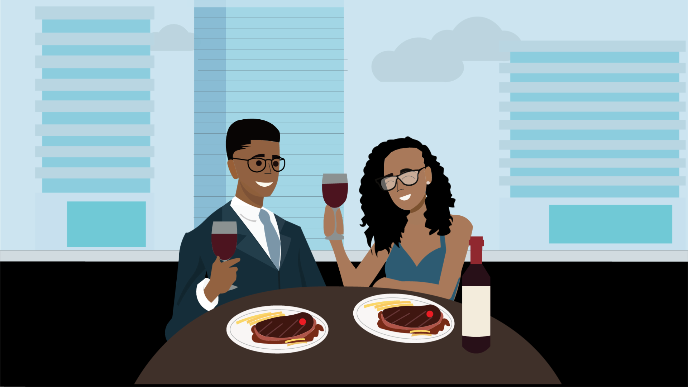
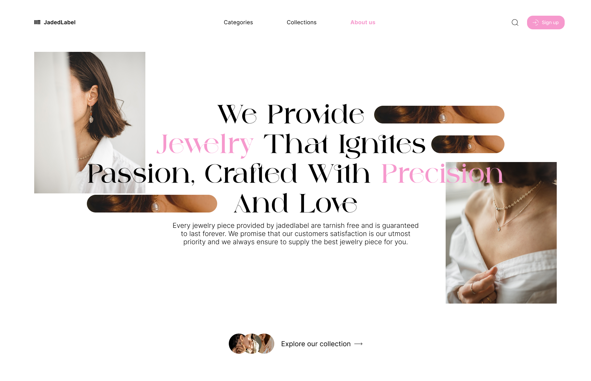
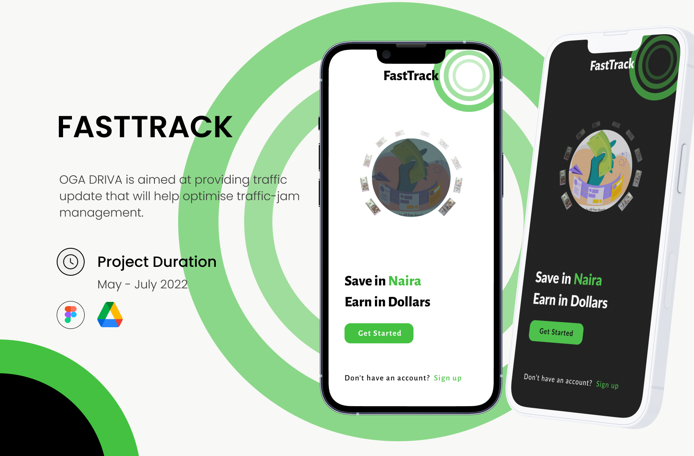
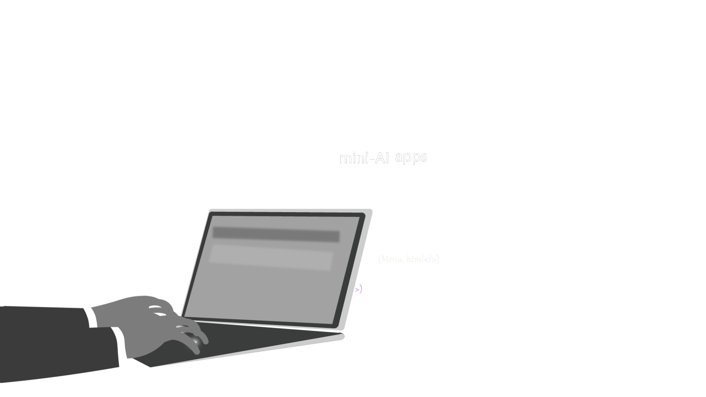
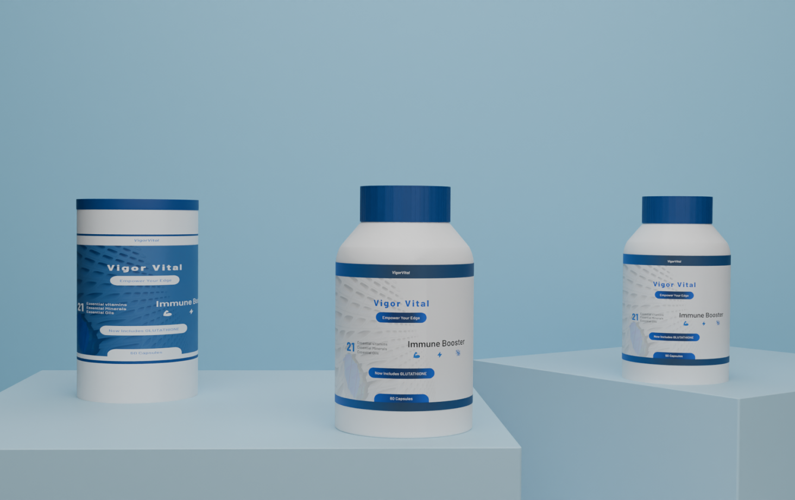
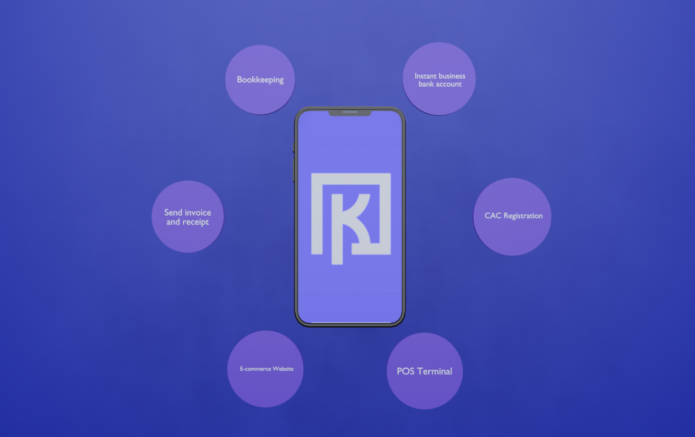
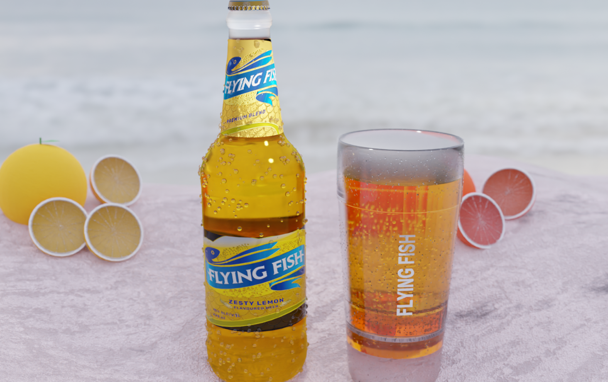
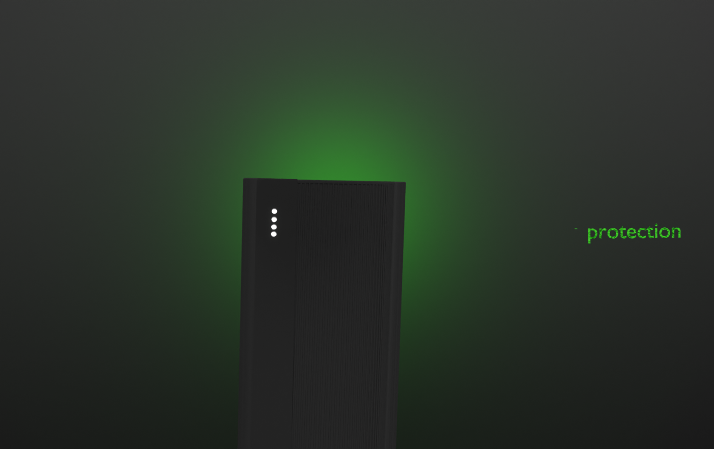
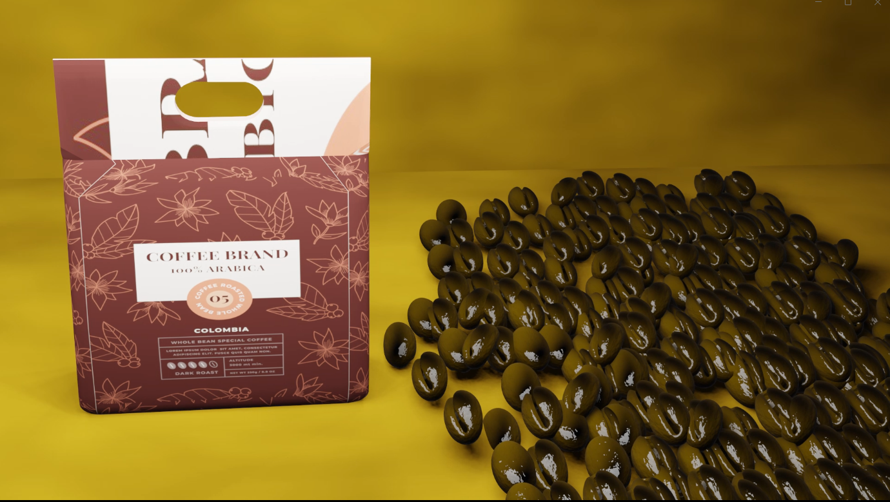
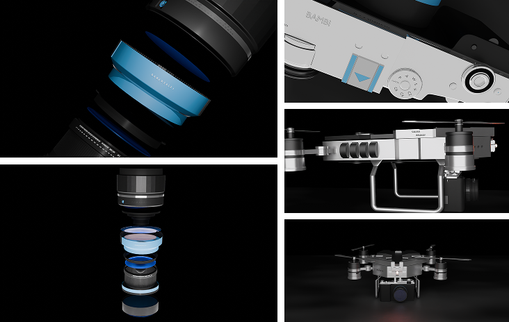

→ The sandbox:
where
ideas
⤢
✖ come to ↔
play
A collection of visual experiment design riffs, and early explorations that never made it to the spotlight but influenced the work that did.
A collection of visual experiment design riffs, and early explorations that never made it to the spotlight but influenced the work that did.
Selected ui/ux project (2023-2025)

Milashades is a fashion brand focused on selling stylish sunglasses. This project involved creating visual content that highlights the brand’s aesthetic, product appeal, and lifestyle positioning
Role: Illustrator, motion designer
The Pot is a conceptual project created for the Creative Art Department, using a pot as a visual metaphor for life. The project explores themes of growth, nurturing, and transformation
Role: Motion Designer

Jadedlabel is a fashion-focused UI concept, with this project showcasing the hero section of the website. The design emphasizes bold visuals, strong typography, and a modern layout to immediately capture attention and communicate the brand’s identity
I guess i was just learning how to combine after effect and figma here. Well, if you ask me i think the hero page is pretty simple and cool.

This project was made for a competition (NESA Economic discourse) and guess what? out of 50 participants, my team won the competition.
Before creating the pre launch video for minzubox, i tried to experiment with different style of videos to capture what’s best for minzubox.

Before creating the pre launch video for minzubox, i tried to experiment with different style of videos to capture what’s best for minzubox.
I guess i was just learning how to combine after effect and figma here. Well, if you ask me i think the hero page is pretty simple and cool.

This is a concept project with blender. Played a little with modelling and rigging. Didn’t like the outcome but weell.. i guess thats why its in the playground section.

This is a concept project with blender. Played a little with modelling and rigging. Didn’t like the outcome but weell.. i guess thats why its in the playground section.
This project was made for a competition (NESA Economic discourse) and guess what? out of 50 participants, my team won the competition.

This is a concept project with blender. Played a little with modelling and rigging. Didn’t like the outcome but weell.. i guess thats why its in the playground section.
This is a concept project with illustrator and after effect. Played a little with illustration and animation using after effect and adobe illustrator.

Really can’t remember the idea behind this concept video but i guess i was just playing around with blender and after effect

Really can’t remember the idea behind this concept video but i guess i was just playing around with blender and after effect

Shot from some 3D modelling i did for
B-I-I-G Photography.